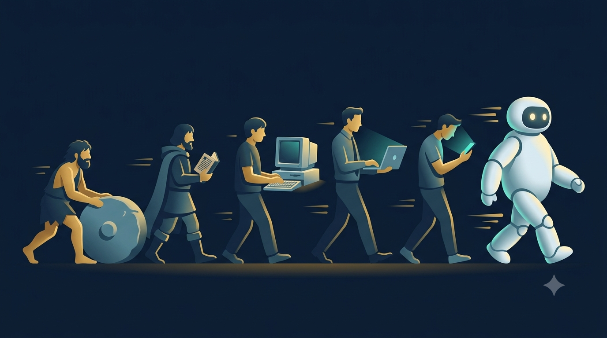

Что обо всём этом должен думать христианин?
Молодёжка
Как христианину смотреть на технологии и ИИ через призму Библии

Что обо всём этом должен думать христианин?
Не убедить вас пользоваться ИИ.
Не убедить вас отказаться.
Цель – научиться смотреть на любую технологию через призму Библии.
1
2
Возможности, риски, духовные последствия.
3
Библейские принципы и решения.
«Итак, едите ли, пьёте ли, или иное что делаете, всё делайте в славу Божию».
1 Коринфянам 10:31Эти три вопроса работают и для печатного станка, и для ИИ, и для того, что появится через 5 лет.
Вопрос 1
Без мифов и сенсаций
И сотворил Бог человека по образу Своему, по образу Божию сотворил его; мужчину и женщину сотворил их. Бытие 1:27
Человек создан по образу Творца – поэтому он сам создаёт:
проектирует · строит · изобретает · творит
Способность делать технологии – часть Божьего замысла о человеке.
Технология – это любое созданное человеком средство, помогающее выполнять задачу.
Значит, технология – это не только компьютер:
…Иувал: он был отец всех играющих на гуслях и свирели… Тувалкаин, который был ковачом всех орудий из меди и железа. Бытие 4:21–22 – первые инструменты
…Я исполнил его Духом Божиим, мудростью… и всяким искусством, работать из золота, серебра и меди… Исход 31:3–5 – Бог даёт мастерство
Бог никогда не воевал против технологий. Он воевал против идолопоклонства.
Если просто: программа, которая по огромному количеству примеров научилась предсказывать «что обычно идёт дальше». Поэтому кажется умной.
ИИ кажется личностью. Но он ею не является:
не обладает сознанием
не обладает душой
не обладает свободной волей
не духовная сущность
Это инструмент. Очень мощный – но инструмент.
Вопрос залу
Меняет ли что-то для тебя мысль, что ИИ – инструмент, а не личность?
Вопрос 2
Возможности, риски, духовные последствия
…построим себе город и башню, высотою до небес, и сделаем себе имя… Бытие 11:4
Проблема была не в башне, а в гордости.
…и сделал из них литого тельца… вот бог твой, Израиль… Исход 32:4
Из мастерства сделали идола.
Опасна не технология. Опасно сердце, которое делает из неё идола.
Трудно молиться, читать Библию, сосредоточиться, размышлять.
Раньше человек выбирал информацию. Сегодня информация выбирает человека.
Идолом становится телефон · лайки · подписчики · популярность · алгоритмы
Можно ли пользоваться ChatGPT? Да. Но вопрос – как:
Если проповедь полностью написал ИИ – кто автор?
Нужно ли говорить, что текст сделал ИИ? Честность.
Дипфейки, поддельный голос и фото – как отличить правду?
Чужие материалы – авторство и ответственность.
Инструмент может помогать. Но не может снять с меня ответственность за правду.
Вопрос залу
Телефон служит мне – или я служу телефону?
Вопрос 3
Принципы и практика
ИИ сегодня тоже может помогать в служении:
Подготовка занятий
Переводы
Презентации
Документы, расписания
Например, за 15 минут можно набросать план, тест по Библии или вопросы для группы – черновик, который потом проверяет человек.
Информация ≠ мудрость
Знания ≠ зрелость
Алгоритм ≠ совесть
Вычисления ≠ любовь
Текст ≠ откровение
Эффективность ≠ плод Духа
«Плод же духа: любовь, радость, мир, долготерпение…» – Галатам 5:22–23
Впереди – роботы, агенты, ИИ-наставники, новые и исчезающие профессии. Готовиться нужно не к каждой новинке, а иметь принципы:
Все испытывайте, хорошего держитесь.1 Фессалоникийцам 5:21
…не сообразуйтесь с веком сим, но преобразуйтесь обновлением ума вашего…Римлянам 12:2
Вопрос залу
Где конкретно ИИ мог бы послужить нашей церкви – и где он точно не должен подменять человека?
1
2
3
«…всё делайте в славу Божию».
1 Коринфянам 10:31Появятся новые технологии – а у вас уже есть библейский способ рассуждать.